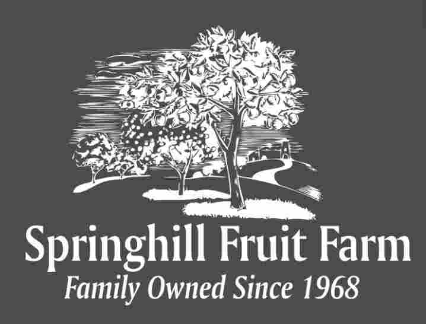

Springhill Fruit Farm was purchased by Kenneth and MaryJane Burrer in the spring of 1968, with its name based on the natural springs on that property. Their youngest son, Jeff Burrer, started leasing the farm in 1998. He and his wife, Laura, took official ownership of Springhill Fruit Farm on December 16th, 2003.
Springhill Fruit Farm started with around 1,000 trees. As of 2018, though, it has since expanded to over 5,000 trees! Its produce and goods now include:
- 30 varieties of Appls
- 4 varieties of Pears
- 6 varieties of Peaches
- 3 varieties of Plums
- 2 varieties of Nectarines
- Pumpkins
- Squash
- Processed Cider

All of Jeff and Laura's family members are a blessed part of their team. They include their son (Benjamin) with his wife (Keely) and their daughter (Isla), their daugther (Mandy Miller) with her husband (Daniel) and their children (Parker, Luke, and Ellee), and their youngest daughter (Megan) with her fiancee (Kevin Sherer).